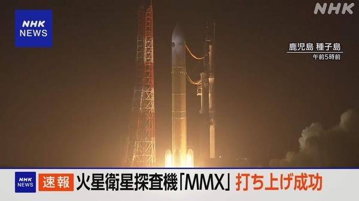
火星衛星探査機「MMX」打ち上げ成功、火星へ向かう軌道に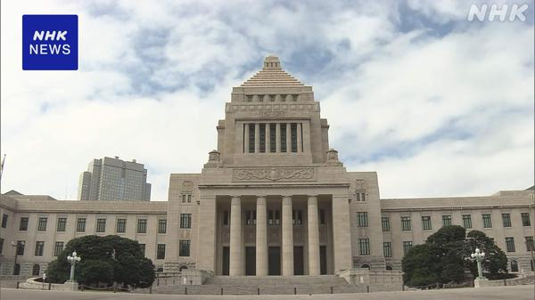
食料品の消費税減税関連法案、きょう衆院で審議入り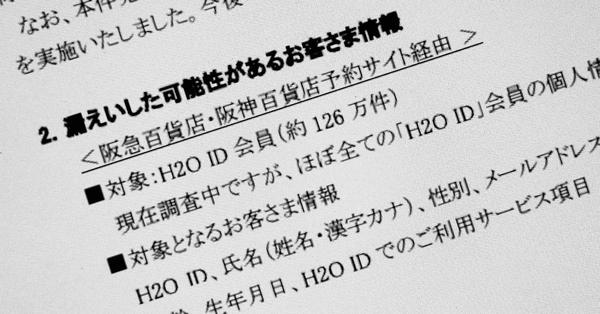
阪急阪神百貨店などの共通ID、約126万件の情報が漏えい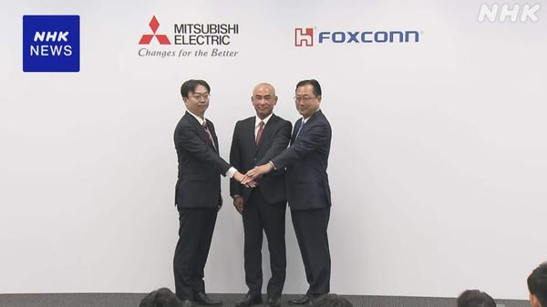
三菱電機、車部品子会社にホンハイが1150億円出資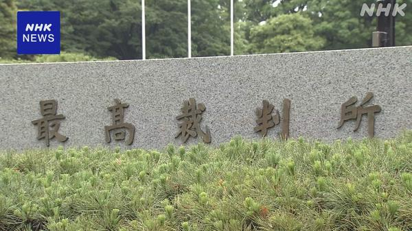
逮捕状のオンライン請求、1都3県で先行導入へ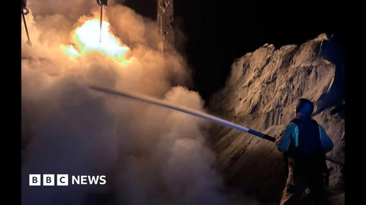
「米の情報共有制限でウクライナ人が死亡」ゼレンスキー氏顧問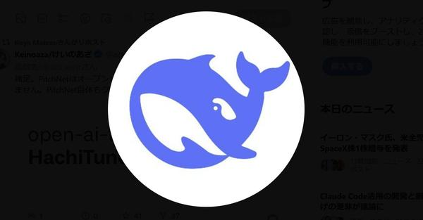
米国土安全保障省、DeepSeek製品を連邦機関から排除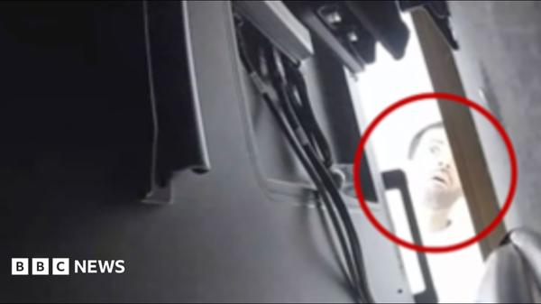
盗聴器設置の疑いの元OpenAI社員、サウジの支援受けたと検察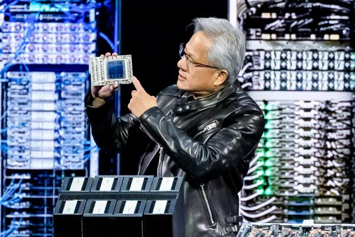
Amazon、PyTorch向け新ツール「TorchNeuron」でNVIDIAに挑む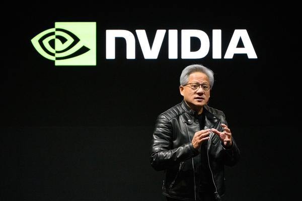
NVIDIA、企業やPCでエージェントを動かす新オープンモデル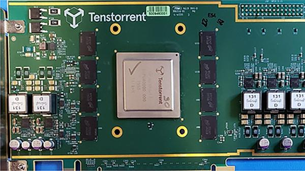
Tenstorrent、15億ドル調達で評価額62億ドルに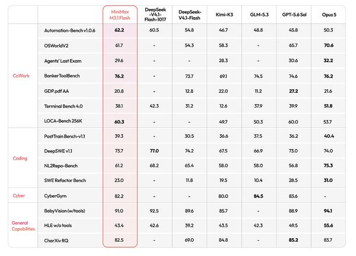
覆面AI「Space Bunny」の正体は「MiniMax M3.1 Flash」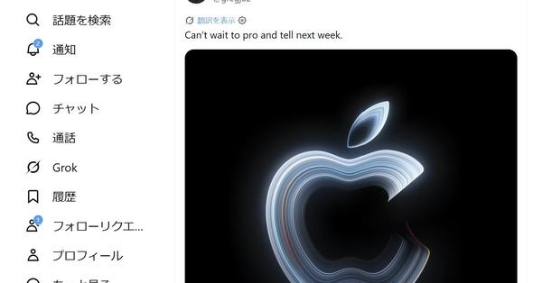
Apple、10月28日に「Pro and tell.」イベント タッチ対応MacBook Proか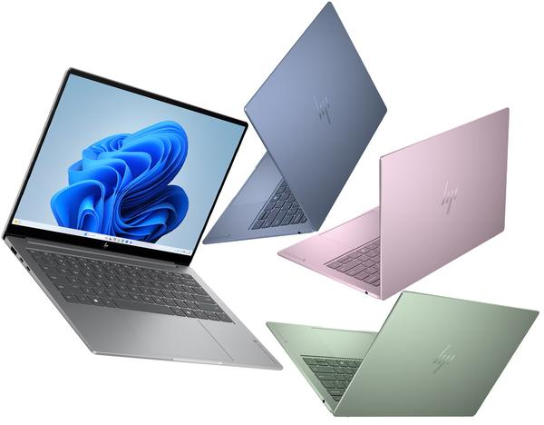
最大42時間駆動で1.16kg、HPの14型「OmniBook 5 14」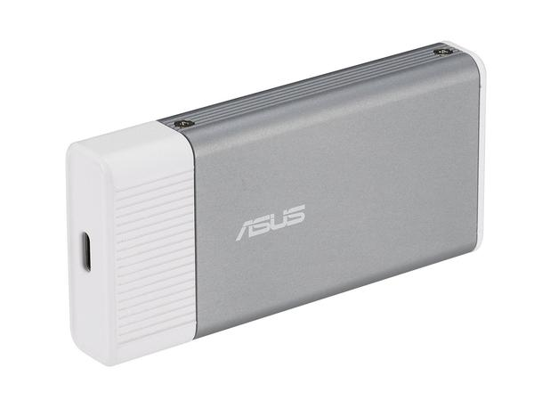
USB接続のAIアクセラレータ、ASUS「UGen300」が店頭に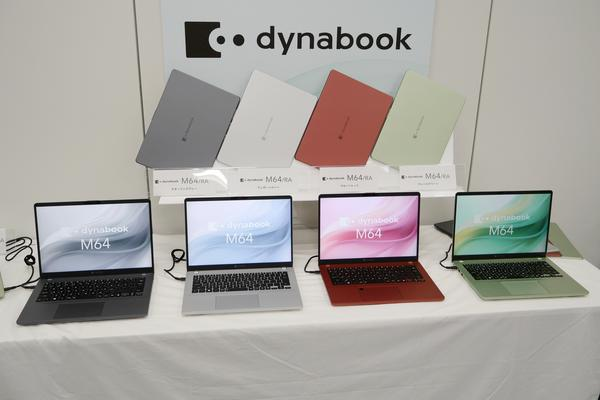
かな表記が消えたdynabook、法人向け14型は4色展開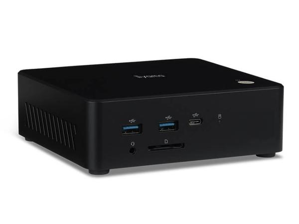
iiyama PC、Ryzen AI 7 450搭載ミニPCを発売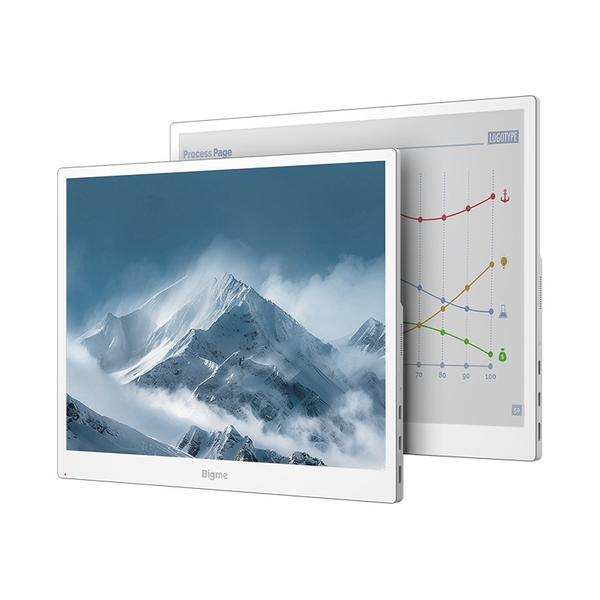
Bigme、最大60fps表示の13.3型モバイルE Inkディスプレイ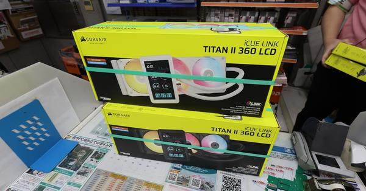
NZXTのピラーレスPCケース「S5 RGB（2026）」が好評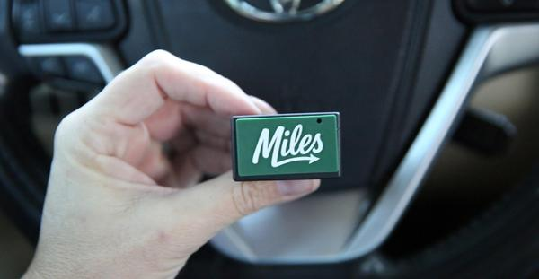
データを売らない車用プラグ「Miles Plug」を試す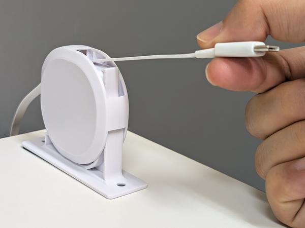
片側だけ引き出せる巻取USB-Cケーブル「katamaki」新モデル